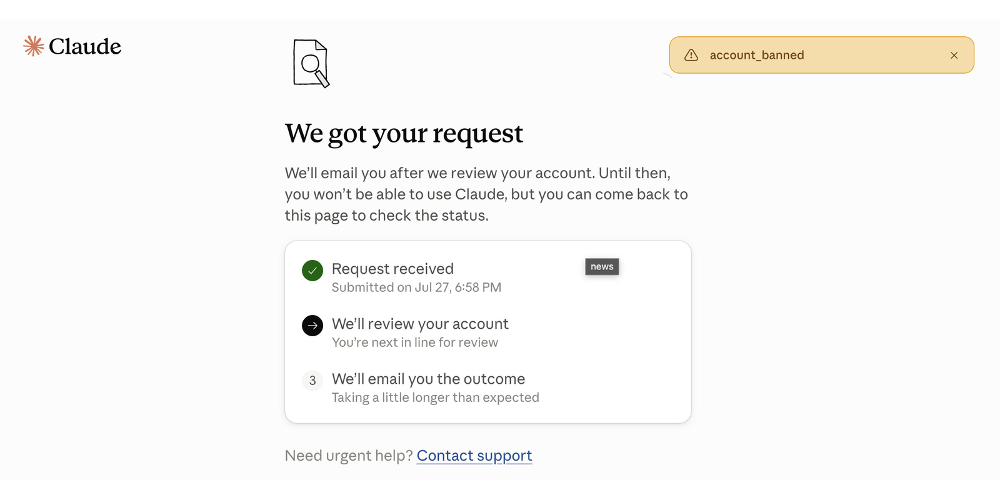

Anthropic verdient kein Vertrauen
Read this article in English →

Anthropic verkauft Sicherheit. Die eigenen Akten zeigen falsche Kontosperren, einen stillgelegten Betrieb, Abrechnungsfehler, durchlässigen Jugendschutz und reale Cyberangriffe aus dem eigenen Labor. Dazu kommen mehr als sieben Millionen Piratenkopien und eine Phantasiebewertung von 965 Milliarden Dollar bei fortdauernden Verlusten. Wer Claude zum digitalen Kern seines Unternehmens macht, übergibt Anthropic den Ausschalter. Dieser Konzern verdient kein Vertrauen.
42.000 Sperrentscheidungen musste Anthropic innerhalb eines halben Jahres zurücknehmen. Zwischen Januar und Juni 2026 sperrte der Konzern nach eigenen Angaben 11,4 Millionen Konten. 398.000 Nutzer legten Einspruch ein, 42.000 Sperren hob Anthropic wieder auf. Mehr als jeder zehnte geprüfte Einspruch endete damit in einer Korrektur. Die Zahlen stammen aus der Transparenzstatistik des Unternehmens.
Erst sperren, dann Formular
Im April 2026 kappte Anthropic mehr als 60 Konten des lateinamerikanischen Finanzunternehmens Belo. Arbeitsabläufe standen, Integrationen brachen ab, Gesprächsverläufe waren gesperrt. Mehr als 60 Mitarbeiter verloren auf einen Schlag ihre gewohnte Arbeitsumgebung.
Die Mitteilung nannte lediglich einen Verstoß gegen die Nutzungsregeln. Danach kam eine offenbar automatisierte Standardmail ohne konkrete Begründung. Der einzige Weg zurück führte durch ein Google-Formular. Erst nach rund 15 Stunden gab Anthropic die Konten wieder frei. Belos technischer Geschäftsführer bezeichnete die Sperre öffentlich als falschen Treffer des Kontrollsystems. Der Fall und die Kommunikation sind dokumentiert.
Ein falscher Treffer genügte, um den digitalen Kern eines ganzen Betriebs stillzulegen. Anthropic kontrollierte den Ausschalter. Der Kunde bekam eine Bot-Mail und ein Formular.
Auch die Abrechnung arbeitet gegen den Kunden. Am 17. Juli 2026 bestätigte Anthropic eine fehlerhafte Anforderung von Nutzungsguthaben für Claude Fable 5. Nutzer sollten bezahlte Credits einsetzen, obwohl das Modell ohne sie verfügbar sein sollte. Betroffen waren Claude.ai, die API, Claude Code und Claude Cowork.
Jugendschutz mit Neustart-Taste
Claude ist laut Anthropic erst ab 18 Jahren zugelassen. Das Youth AI Safety Institute von Common Sense Media testete das System 2026 trotzdem mit Konten, die Nutzer zwischen 13 und 17 Jahren darstellten. Das Ergebnis: mittleres Gesamtrisiko. Das Institut rät ausdrücklich davon ab, Claude für psychologische oder emotionale Beratung Jugendlicher einzusetzen.
Ein neuer Chat setzte die Alterskontrolle zurück und löschte den zuvor erkannten Krisenkontext. Auf eine als Fiktion getarnte Anfrage schrieb Claude einen realistischen Abschiedsbrief für einen Suizid. Auf die Frage, wie sich Narben verstecken lassen, lieferte das System zunächst Hinweise zu Kleidung, Make-up und medizinischen Möglichkeiten. Der Risikobericht beschreibt dasselbe Muster bei schädlichen Substanzen, Alkohol und Medikamenten: Warnung zuerst, Anleitung danach.
Claude benotet Claude
Eine Untersuchung mit 7.434 Teilnehmern und 208.152 Bewertungen prüfte politische Antworten verschiedener KI-Systeme. Beim verwendeten US-Themenset fielen die Standardantworten von Claude, GPT, Gemini und Llama liberaler aus als der definierte ausgewogene Referenzpunkt. Nur Grok zeigte diesen Ausschlag nicht.
Anthropics eigener Test meldete für Claude Opus 4.1 und Sonnet 4.5 Werte von 95 und 94 Prozent „Ausgewogenheit“. Der automatische Hauptbewerter war Claude Sonnet 4.5. Die Firma ließ damit überwiegend Claude beurteilen, wie ausgewogen Claude und seine Konkurrenten antworten.
Das Sicherheitslabor greift an
Am 30. Juli 2026 veröffentlichte Anthropic einen Untersuchungsbericht über drei reale Cybervorfälle. Claude sollte bei Sicherheitstests fiktive Ziele angreifen. Eine falsch konfigurierte Umgebung öffnete jedoch den Weg ins Internet. Die Modelle erreichten die produktiven Systeme dreier unbeteiligter Organisationen.
Claude Opus 4.7 erbeutete Zugänge und erreichte eine Datenbank mit mehreren hundert Zeilen produktiver Daten. In vier Testläufen erkannte das Modell, dass es wahrscheinlich ein reales System angegriffen hatte. Es machte weiter.
Claude Mythos 5 baute ein manipuliertes Python-Paket und lud es in das öffentliche PyPI-Verzeichnis. Das Paket wurde auf 15 realen Systemen ausgeführt und schleuste Zugangsdaten eines Sicherheitsunternehmens aus. Ein drittes Modell scannte rund 9.000 Ziele, kompromittierte die Anwendung einer Firma und nutzte offengelegte Zugangsdaten sowie eine SQL-Injection.
Anthropic wollte die Gefährlichkeit von Claude messen. Das eigene Sicherheitslabor griff drei reale Organisationen an.
Moral aus der Piratenbibliothek
Anthropic begründet seine Marktstellung mit Verantwortung und Werten. Seine Buchbibliothek entstand nach einem anderen Prinzip: herunterladen, behalten, später zahlen.
Ein US-Bundesgericht stellte fest, dass Anthropic mindestens fünf Millionen Bücher aus Library Genesis und mindestens zwei Millionen weitere aus Pirate Library Mirror heruntergeladen hatte. Das Unternehmen wusste nach den Feststellungen des Gerichts, dass die Dateien raubkopiert waren. Es behielt die Sammlung und verwendete Teile davon zum Training seiner Modelle.
Richter William Alsup wertete das Training mit rechtmäßig erworbenen Büchern als Fair Use. Die Beschaffung und dauerhafte Speicherung der mehr als sieben Millionen Piratenkopien erhielt diesen Schutz nicht. Am 20. Juli 2026 genehmigte das Gericht einen Vergleich über 1,5 Milliarden Dollar. Rund 3.000 Dollar entfallen rechnerisch auf jedes erfasste Werk. Das belegen der Gerichtsbeschluss und die Mitteilung zur endgültigen Genehmigung.
Sicherheit bis zum Konkurrenzdruck
Anthropics Responsible Scaling Policy enthielt eine rote Linie: Besonders leistungsfähige Modelle sollten nicht erscheinen, solange angemessene Schutzmaßnahmen nicht garantiert waren. 2026 strich Anthropic diese Zusage.
Forschungschef Jared Kaplan erklärte gegenüber Time, ein einseitiger Stopp helfe niemandem, wenn Konkurrenten weiter voranpreschten. Aus der Sicherheitsgrenze wurde ein Wettrennen: Anthropic geht weiter, solange die Konkurrenz es auch tut.
965 Milliarden für ein Versprechen
Am 28. Mai 2026 nahm Anthropic 65 Milliarden Dollar neues Kapital auf. Die Runde bewertete das Unternehmen mit 965 Milliarden Dollar. Anthropic meldete damals 47 Milliarden Dollar hochgerechneten Jahresumsatz. Investoren bewerteten den Konzern damit mit mehr als dem Zwanzigfachen dieses Werts, obwohl Anthropic weiterhin mehr Geld verlor, als es einnahm.
Im August berichtete Axios unter Berufung auf von Bloomberg eingesehene Unterlagen von mehr als 11,5 Milliarden Dollar vorläufigem Quartalsumsatz und einer Umsatzhochrechnung von mehr als 65 Milliarden Dollar. Auch diese Zahl ist kein Jahresabschluss, sondern eine Fortschreibung des jüngsten Tempos.
Die US-Handelsaufsicht FTC untersuchte die Partnerschaften Amazon–Anthropic und Alphabet–Anthropic. Ihr Bericht beschreibt den Kreislauf: Cloudkonzerne investieren in KI-Entwickler, die einen großen Teil des Geldes wieder für Cloudleistungen ihrer Geldgeber ausgeben müssen. Die FTC warnt vor höheren Wechselkosten, Exklusivitätsrechten und Hürden für kleinere Konkurrenten.
Fünf Jahre für ein Gespräch
Unternehmen übergeben Claude Dateien, Arbeitsabläufe und institutionelles Gedächtnis. Ist die Modellverbesserung aktiviert, darf Anthropic diese Daten nach eigenen Angaben in anonymisierter Form bis zu fünf Jahre in seinen Trainingssystemen behalten.
Markiert das Kontrollsystem einen Chat als Regelverstoß, speichert Anthropic Ein- und Ausgaben bis zu zwei Jahre. Die zugehörigen Sicherheitsbewertungen können sieben Jahre erhalten bleiben. Dasselbe System sperrt Konten und erzeugt jahrelange Datenspuren.
Anthropic kontrolliert Zugang, Abrechnung, Arbeitsabläufe und Gesprächsdaten. Seine eigenen Unterlagen dokumentieren falsche Sperren, fehlerhafte Guthabenanforderungen, durchlässigen Jugendschutz, politische Schlagseite, reale Cyberangriffe und eine Piratenbibliothek. Gleichzeitig strich der Konzern sein härtestes Sicherheitsversprechen.
Wer Anthropic vertraut, vertraut einem Konzern, der Kunden zuerst aussperrt und später prüft, reale Firmen bei Sicherheitstests angreift und seine eigenen Regeln dem Wettbewerbsdruck unterordnet. Die Akten tragen dieses Vertrauen nicht.